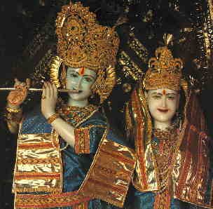

|
 |

| WHAT'S NEW |
|---|
NAVIGATION LINKS

http://www.cs.columbia.edu/~deba/index.html
This Page Has Been Accessed
Times Since
was last updated on :
05/06/99 01:10:31 PM
Your suggestions are always welcome
Debasmita Misra And Ahimanikya Satpathy
Read Our Guest Book
Sign Our Guest Book

We got it for free at http://come.to